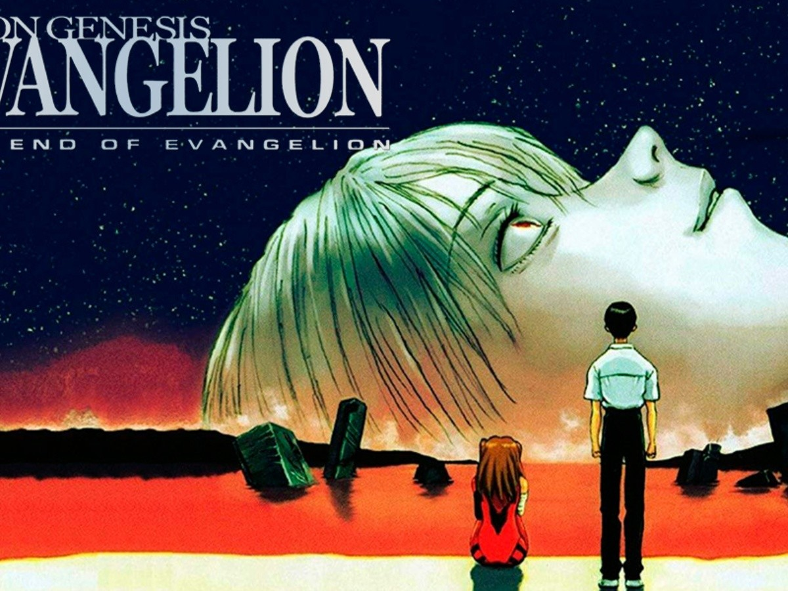

Georges de Jesus Gil Pichardo
Calle #1 Cruz de Marilopez // Tel:809-123-4567
Datos Generales
Fecha de Nacimiento: 22/09/98
Edad: 22 años
Cedula: 402-1234567-8
Nacionalidad: Dominicano
Email: georgesgil@gmail.com
Formacion Academica
Estudios Primarios: Escuela Ana Josefa Jimenez
Edstudios Secundarios: Liceo Rafael Fausto Jimenez
Experiencia Laboral
Ninguna
Interestellar
The End of Evangelion

The Legend of the Galactic Heroes